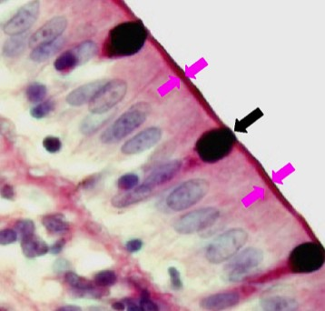

Geef enkele typische kenmerken:
H) Verder zijn er nog enkele karakteristieken die je dient te vermelden bij de typering. Deze zijn verschillend bij éénlagige en meerlagige epithelen. Zij hangen sterk samen met de functie die deze epithelen in het orgaan en het lichaam vervullen.Eénlagige epithelen zorgen meestal voor een efficiënte uitwisseling van stoffen tussen de buitenwereld en de rest van het lichaam. De meeste cellen in éénlagige epithelen zijn hiervoor gespecialiseerd.
- Een celtype dat gemakkelijk herkenbaar is in epithelen, is de slijmbekercel. Zij bezitten een naar de basaalmembraan toe weggedrukte kern en een slijmprop aan de kant van het lumen (apicale kant). Kijk na of er slijmbekercellen zijn. Tip: dit houdt verband met de functie (slijmproductie).
- Aan de apicale kant kunnen de cellen functie-gerelateerde oppervlaktespecialisatie hebben.
- Fijne dunne ‘lijnvormige structuurtjes’ die je bij sterke vergroting afzonderlijk van elkaar kan onderscheiden: trilharen of stereocilia (het verschil moet je functioneel afleiden)
- Microvilli zijn te herkennen aan een sterk kleurbaar laagje aan het apicale celoppervlak: de ‘staafjeszoom’ of ‘borstelzoom’. Microvilli zijn namelijk uitstulpingen van de celmembraan zodat je oppervlaktevergroting krijgt. Bij korte microvilli spreek je van een staafjeszoom, bij lange van een borstelzoom.Bekijk de apicale celdifferentiaties.

Dit preparaatje is gekleurd met een specifieke kleuring waarbij we de slijmproppen van de slijmbekercellen terugvinden aan de apicale kant van de cellen (zwart pijltje). Tegen de buitenwereld aan zie je de sterker gekleurde staafjeszoom (tussen de roze pijltjes), wat betekent dat de cilindrische cellen aan hun apicale oppervlak microvilli bezitten.
Dit is een éénlagig cilindrisch epitheel met slijmbekercellen en een staafjeszoom.
Dit is een éénlagig cilindrisch epitheel met slijmbekercellen en een staafjeszoom.
Vordering zelfstudie bedekkende epithelen: